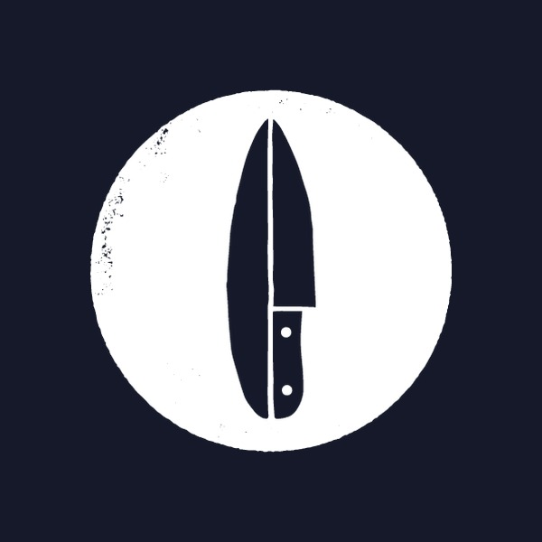
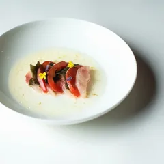
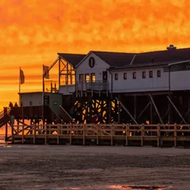
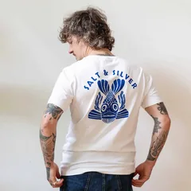

saltandsilver
saltandsilver
Euer Feed bleibt, wie er ist. Darauf bauen die nächsten dreißig Beiträge auf, so wie ihr sie nach und nach postet: eure Sätze von saltandsilver.de zwischen euren Fotos, vom Hafen, aus dem Crudo, vom Meer und von unterwegs.
Mit dem Schalter seht ihr euren Feed heute und mit den nächsten dreißig. Die Nummern zeigen die Reihenfolge zum Posten, ein Tipp auf einen Beitrag öffnet ihn mit seinem Text.


Crudo
Am Meer
Shop